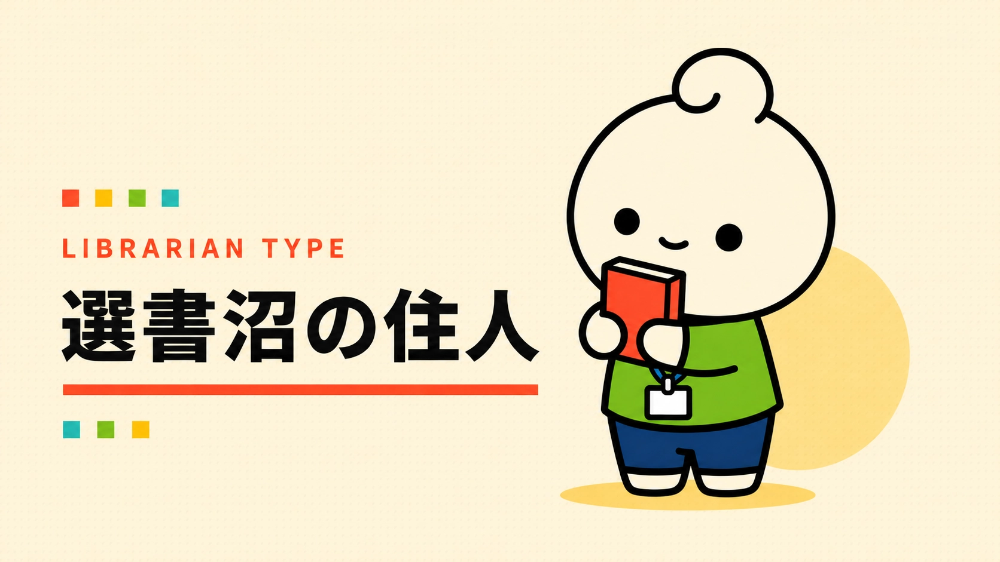

あなたの図書館員タイプは……
選書沼の住人

「これも必要かも」が、どんどん増える。
資料を選び始めると、「これも必要かも」「この分野も揃えたい」と候補が広がっていくタイプ。
こんなこと、ちょっと好きかも
- 刊行情報の比較
- 蔵書の空白を見つける
- 候補リストを育てる
※もちろん、だいたいです。
← もう一度やるYAWATOSHO GAMES / PICK 01
あなたにおすすめのYAWATOSHO GAME
GAME / 01
University Library Maker
限られた予算と職員の負担を見ながら、3年間の大学図書館を育てる運営シミュレーション。
限られた条件の中で「どんな図書館にするか」を考えるゲーム。候補を広げがちなあなたなら、選ぶ時間まで楽しめそう。
このゲームで遊ぶ